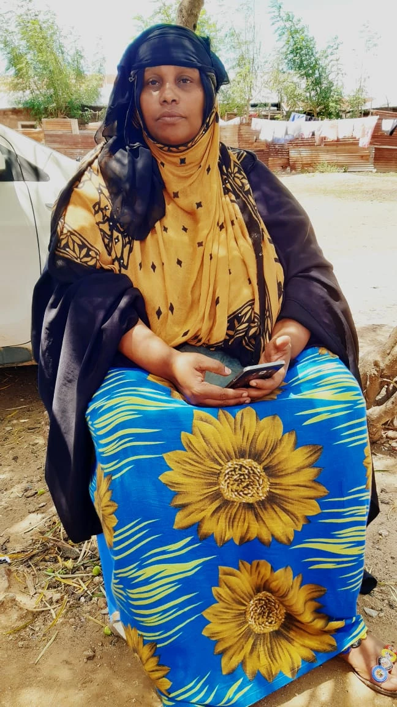
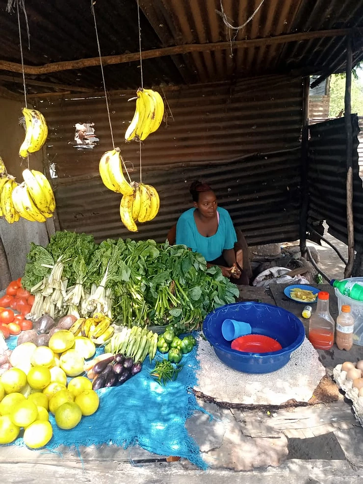

Red Cross brings Community Currency to Kisauni
Below are a compilation of Community Inclusion Currency (CIC) user stories from Grassroots Economics Field Support Engineers (Emmanuel Mbui, Amina Godana, Janet Akinyi and Joyce Kamau) supporting and working with Red Cross volunteers and community groups. Implementation with Red Cross volunteers led by Bahero Mohamed through door to door awareness raising and street theater began in January 2021. The following case studies are taken from the week of April 23rd 2021 and their successes continue to ripple out across the region. While Kisauni is only a small part of Kenya; through word-of-mouth over 50,000 households and small businesses in vulnerable areas have registered to be part of the Sarafu Network since 2020 and have traded roughly 3 Million USD of goods and services among each other using a blockchain ledger - on simple phones without the need for internet.
By Emmanuel Mbui
Economic imbalance, insecurity, dependency and luck of money are the challenges experienced by most people in Kisauni. Thanks to Red Cross, partnering with Grassroots economics foundation for introducing CICs, Community Inclusion Currency (locally Sarafu or 'currency' in Kisawhili); a medium of exchange that builds trust and unites members of a community. Sarafu helps people pool the locally available resources and provides a fair space for exchange within the community.

In Kenya, Mombasa County, Kisauni sub county, in Manyani village, we find Jackton Mwema (pictured above), a tailor in his community. Jackton spends most of his time mending other people clothes. By doing this, he is able to support his family from the little cash he gets. Like any other member in his community, Jackton is not an exception to economic trauma which is why he joined the Sarafu network. He is now linked to other members of Sarafu within the community who have other goods or services (Fresh water, vegetables, shops) to offer to one another. Jackton at his place of work in Manyani village accepts payment in sarafu for the service that he provides, which he latter spends it to buy other goods and services from other members in the community.
Jackton is not the only one who benefits from Sarafu, in the same village of Manyani, we meet another beneficiary. Victoria Kylo. The owner of a small Duka (shop) in the village, she joined the network and accepts a small percentage of the payment in Sarafu. Victoria is in the same trading circle with Jackton and other members. Victoria uses her Sarafu to buy mboga(vegetables) and services like repairing her clothes from Jackton and to buy cold water from their neighbor.
The two have also manage to invite other people in by explaining how Sarafu works, giving a testimonial example through themselves. Now their trading group has four active members.
Due to Covid 19 Pandemic and its effects on the economy at large, most of the people have not been able to cater for their basic needs. The ones greatly affected being the vulnerable in the community. A ray of hope was brought upon these communities with the introduction of Community Inclusion Currencies which helps them get their basic needs and has also helped them in minimizing debt collection which was a great challenge to them. Here are some testimonials from different users in different locations.
By Amina Godana
Mshomoroni Area in Mjambere Ward: Its an area where the local economy is not that sustainable this is because most of the young and able youths have engaged themselves in illegal activities such as theft and high level of insecurity in the area. This is due to financial trauma. This has however begun to change with the introduction of community inclusion currencies since anyone can accept and use Sarafu even when they do not have a business. He/she can offer services in the community and be paid with CIC and later spend on other business.
Here are some testimonials of users who have benefited with the usage of sarafu in the area.

Mwanahamisi Kiti: A mother of three who sells Samaki (fish) by the road side is very grateful for the introduction of Sarafu to her business she says she can now get the daily needs this is because there is an increase in customers to her business and the sarafu she gets she can comfortably buy charcoal from Patricia Munyaka who is her immediate neighbor. (She also spends her sarafu to buy groceries from Irene Matoke and buy Utensils from Suleiman Mohammed.)

Patricia Munyaka (pictured above): She is the bread winner of her family has a small Makaa (charcoal) business which she says the sales have increased when she embraces the sarafu concept. She further explains how she has reduced debt holding in her business which was a major challenge to her but now she accepts sarafu instead of debts. This has greatly helped her business in terms of restocking. She uses her sarafu to buy fish from Mwanahamisi Kiti and also accepts sarafu from her and also buys groceries from Irene Matoke.

Irene Matoke (pictured above): She runs a grocery kiosk she was introduced to the system by Mwanahamisi Kiti who shared her success story with her. Upon hearing this she was excited and joined the network with no hesitations since she was a witness on how sarafu has helped her friend Mwanahamisi. She buys fish from Mwanahamisi and sells her grocery to her and also spends her sarafu to buy charcoal from Patricia.
Suleiman Mohammed (not pictured) where he sells Malimali (utensils and other stuff) he depends on that business to put food on the table he is delighted to be a member of sarafu since he can get his basic needs. He buys Fish from Mwanahamisi and she in turn buys utensils from him.
By Janet Otieno Akinyi
SARAFU CHANGING LIVES! Imagine being evicted from your house because of an accumulated rent arrears together with your 5 children. This is the sad story of Fatuma Mzee, a 35 year old residing in Mjambere, Kisauni, Mombasa Kenya of Sarafu.
"My husband lost his work in 2016 and that pushed us to the toughest experiences ever in our lives. We struggled through different casual works just to put up with the bills-rent, fees,food,water and electricity. Life became even harder when our landlord could not tolerate us anymore, who would put up with 6 months arrears anyway? We were evicted !
My family decided to look for a smaller house. It is then that we moved to Mjambere. I have been here for 7 months. I started my Juice, Ice and Ice Cubes business. Through Sarafu I was able to provide at least one meal a day for my family.
In mid February 2021, I was lucky and overjoyed to know about Sarafu as it was introduced to my community. Through Sarafu, I have been able to unite with my neighbors, I’ve gained trust with them and this has enabled me to form my network of trade. I can easily get my basic needs from my network and the sales in my business have also increased. I’m grateful to Sarafu and I’m looking forward to referring more people to Sarafu so that I can grow my network.” Fatuma narrated.
- Among the users in Fatuma’s network are:
- Ezline Chepkemboi: Ezline sells locally made detergents-jik,liquid soap and washing powders. Fatuma is no longer worried about her laundry since Ezline has her sorted. Ezline is also glad that she can get cold drinking water from Fatuma whenever the sun gets unbearably hot.
- Celly Jerotich: who just joined Fatuma’s network is so excited about the concept. A widow and a mother to 2 adorable daughters runs her grocery shop just adjacent to Fatuma’s place. Fatuma therefore has her grocery needs sorted and Celly is also glad to be receiving juice and detergents from Ezline and Fatuma.
- Rose Karimi: runs a small shop where she sells flour,rice,sugar,salt,cooking oil among other products. Talking to her about Sarafu,she was optimistic and happy that it was introduced to them. She stated that Sarafu has made it easier for them to get their basic needs. Karimi being in Fatuma’s network, is sure of getting products from other small vendors around her as she also allows them to buy from her in Sarafu.
- Linet Saru: is a new addition to Fatuma’s network. A single mother of two narrated that Sarafu will help her cub poverty as she feels more empowered to grow her local economy through her network. Linet is a fish vendor and she’s glad to have joined Fatuma’s network since they will all gain from one another using Sarafu.
I find it amazing how community inclusion currency (Sarafu) can support and sustain the long-term resilience of the marginalized communities like Mjambere! The initiative delivered to Kisauni by Kenya Red Cross Society,Danish Red Cross and Grassroots Economics Foundation has impacted Kisauni residence in a positive way as it has not only strengthened and supported the vulnerable households but also created unity within the community.
By Joyce Kamau
Mjambere is a community within Kisauni sublocation whose population includes people from the grassroots. When the pandemic struck most people from the community were already struggling to put food on the table. This is an example of vulnerable communities which live from hand to mouth.
Most people from this community are small business people who own small shops, Grocery kiosk, fishermen, food vending, casuals etc. Due to lack of consistency flow on Kenya shillings, some people struggle to get sell their goods, find work or get basic needs and hence end up being in debts. Covid-19 pandemic has made lives incredibly difficult all over the world with dwellers of Mjambere in Kisauni being no exception.
Execution of Sarafu network by Grassroots economy in conjunction with Kenya Red Cross in Kisauni community for the first time has been well received- it being a tool for trading where Kenyan shillings is lacking/not enough. Through Monthly statistics,its evident that sarafu has been circulating among users in transacting goods and services which has so far is creating a healthy and sustainable community in the face of economic crisis.
Below are examples of success stories from a group of users who form a good trading loop amongst themselves;

Mathew Musyoka a resident of Mjambere community is a middle aged man who runs a Chemist .
With the surge of Covid 19, Musyoka has been willing to accept Sarafu for Surgical Masks from the community as a way of preventing the spread of Covid-19 and to help people save Ksh for other amenities. His daily limit on how much Sarafu he will accept for Masks is unlimited since he will still have some more stock even after selling some with KSH and made enough profit to enable him restock. This is his corporate social responsibility for his community. He also accepts Sarafu for over the counter medicines.
Mathew has also benefited by buying goods from other vendors like Esther Mutua who sells ground nuts and baked potatoes commonly knows as Viazi Karai.
Christine is a food vendor from Mathew’s network and whose son at one point got sick and She was able to get some OTC medicine from Mathew’s chemist. Christine on the other hand is supporting the community by accepting Sarafu for her chapati.
Abdallah’s family comprises of seven members and their source of income solely depends on daily sales from their family grocery kiosk. He is greatful with the introduction of community currency now that he can meet other basic needs for the family while using his trade networks among Christine and Mathew.
Zaiwabu Moraa a grocer lady located a few meters from Mathew’s chemist is also connected to this active network and has supported her network by accepting sarafu for groceries and fries.

Luvuno Kiti a fish monger is also been connecting with Zaiwabu trading fish to groceries using sarafu this two are immediate neighbors. She has been happy to accept 50 sarafu on a daily basis from other users and later spend to to buy groceries from Zaiwabu and Mahamri (triangle bread) from her other neighbor who operates a hotel.
These small businesses are good examples of how people build trust amongst themselves, help others in the community while using a form of local credit (Community Inclusion Currency) to grow their economy and meet their basic need. Community based currency traders from this village have been successful in meeting their daily needs as well as getting more customers .